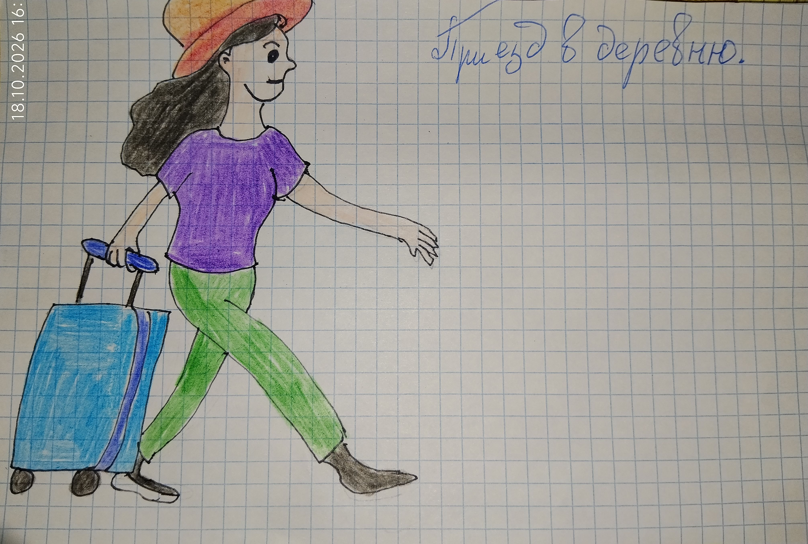

(Рисунок: Девушка с чемоданом)

У бабушки было большое хозяйство: корова с телёнком, овцы, свиньи, кролики, куры и петух. Петух был красный, важный и вредный. Он постоянно бегал за мной по двору и клевал мне ноги. Я убегала, а он догонял - видно, считал меня своей территорией.
Ещё у бабушки жили две собаки: немецкая овчарка Ремка и лайка Белка. Ремку я дрессировала сама. Она была очень добрая, чуткая, ласковая - всегда подходила, клала голову мне на колени и смотрела умными глазами. Я учила её командам: <<сидеть>>, <<лежать>>, <<рядом>>. Она слушалась и виляла хвостом - ей нравилось заниматься. А Белка всё время куда-то бежала и лаяла - ругалась постоянно, и дрессировке не поддавалась. Была и лошадь.
А ещё у бабушки жила сиамская кошка. Она была удивительная: сама открывала двери из дома. Подойдёт к двери, лапой подденет - т готово. А ещё она часто сидела в одном углу. головой в угол, и умывалась. Я смотрела на неё и думала: о чём она думает?